LeadershipStructural Redesign
Restoration and Rebuild of Sundials
Eagle Scout Service Project · Mattos Elementary School
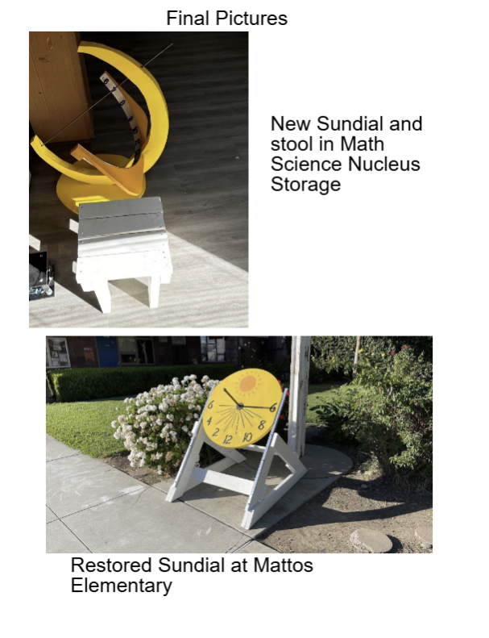
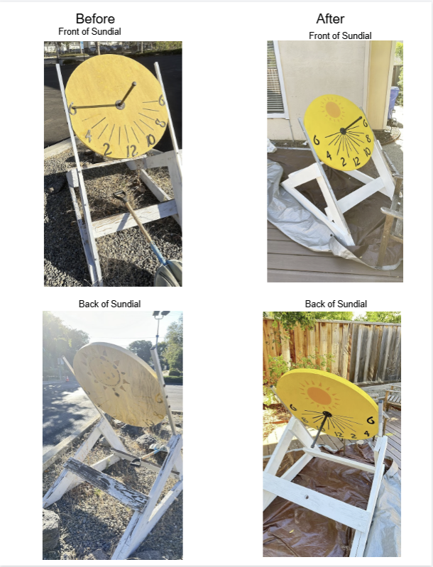
What?
- Led full restoration and structural redesign of an outdoor sundial at Mattos Elementary School as my Eagle Scout service project
- The existing structure had deteriorated from weather exposure, so the goal was restoring structural integrity and educational function before campus construction
How?
- Reverse-engineered existing geometry to verify gnomon alignment; redesigned base frame for improved load distribution and outdoor durability
- Recruited and coordinated volunteers across demolition, fabrication, and assembly; managed full materials budget and sourced donations
- Operated power tools (circular saw, miter saw, drill, orbital sander); pivoted design mid-build when tolerances failed and redistributed tasks to meet deadline
Results?
- Delivered fully restored sundial to school administrators before campus construction began
- Completed on budget with all structural, alignment, and finish requirements met
Autonomous SystemsUAV Design
Conservation Surveillance Drone
Personal Build
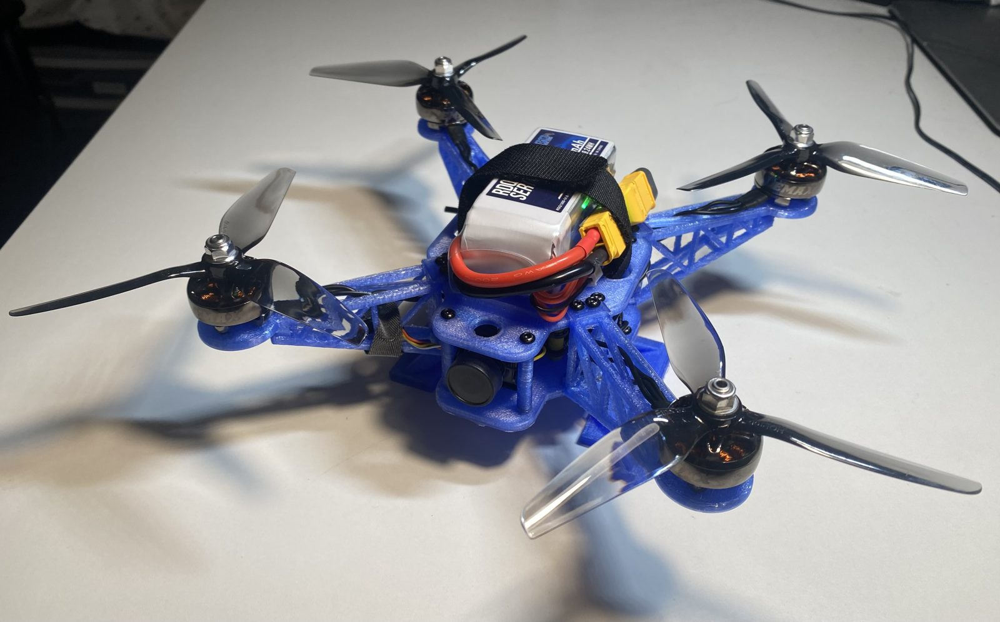
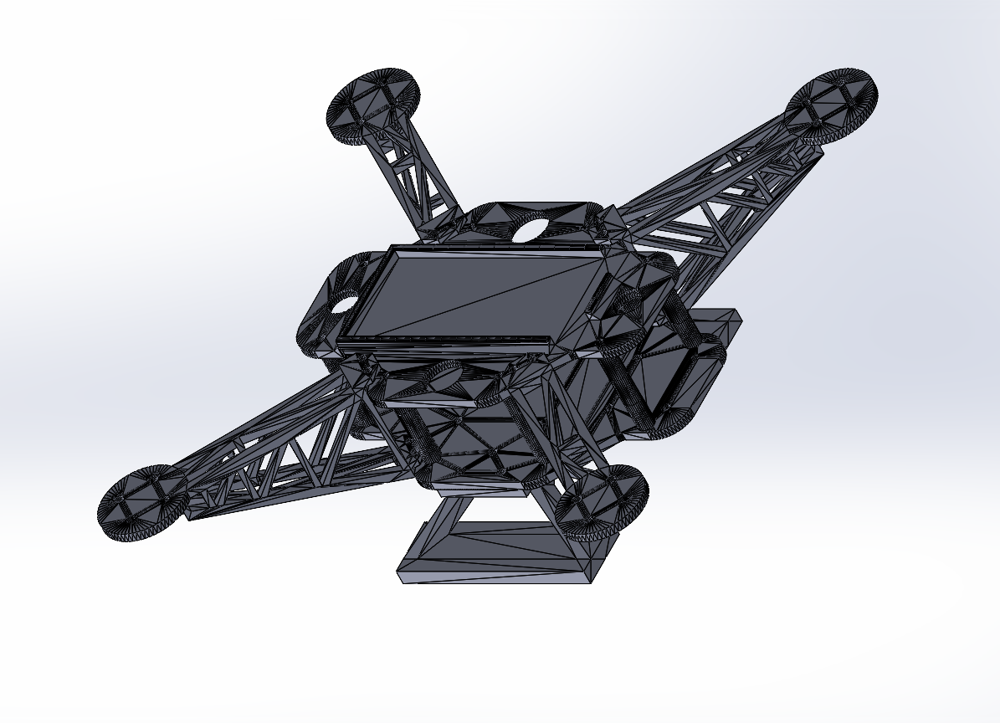
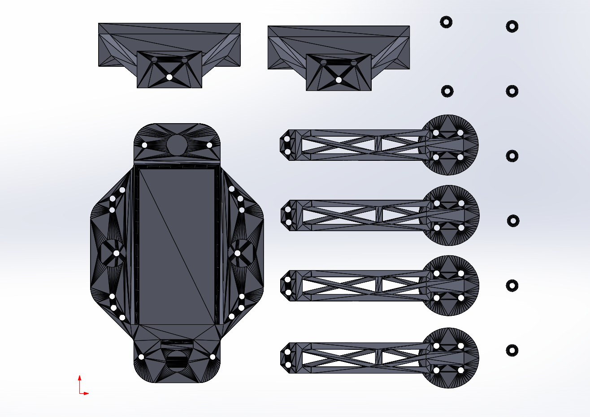
What?
- Designed, built, and flight-tested a custom quadrotor for environmental monitoring
- Full-stack build: frame design, propulsion selection, avionics integration, and flight controller tuning
How?
- Designed a custom 3D-printable frame with truss-style arms optimized for stiffness-to-weight
- Integrated full avionics stack including ESCs, ExpressLRS flight controller, and receiver; performed all soldering
- Tuned flight controller through iterative test flights
Results?
- Stable, repeatable flight achieved under manual and stabilized control modes
- All mass, power, and structural constraints met within budget
- Donated to a local regional park for continued use
Flight DynamicsSimulation
Model Rocket
Full-Lifecycle Design & Launch
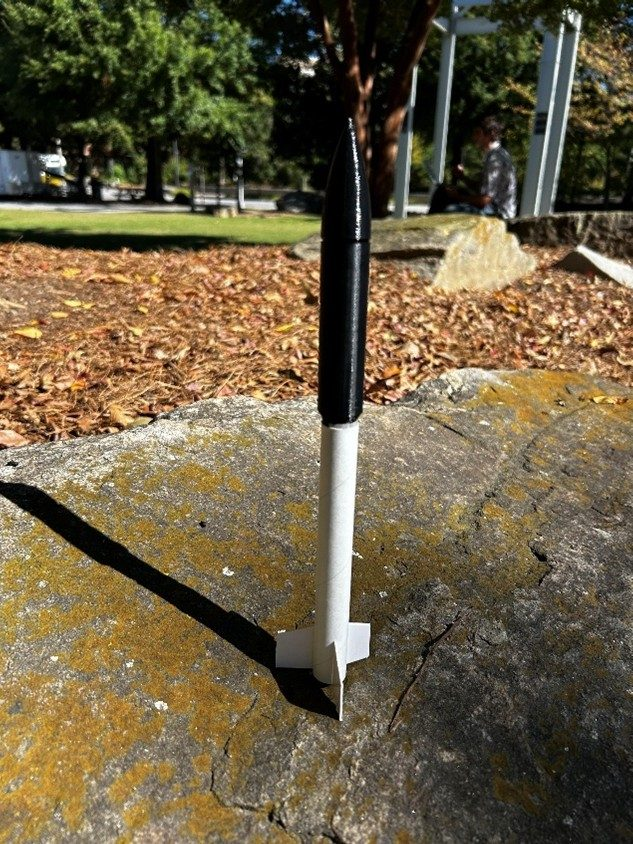
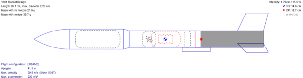
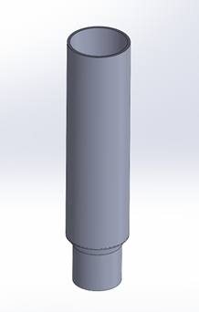
What?
- Full lifecycle design, simulation, manufacturing, and launch of a single-stage model rocket targeting 125 ft apogee with an onboard altimeter
- Core goal was validating how closely simulation predictions matched real flight performance
How?
- Designed vehicle iteratively in OpenRocket with a motor trade study across three candidates
- Designed and 3D printed payload bay and nose cone in SolidWorks across multiple tolerance iterations
- Performed mass property and CG analysis to validate 1.77 caliber stability margin
Results?
- Predicted 117 ft, measured 81 ft, stability margin 1.77 cal (the 31% deviation was attributed to launch friction, wind, and streamer packing)
- Stable ascent, successful recovery, altimeter protected
- Co-authored a full technical design report
AerodynamicsFlight Vehicle Design
Balsa Wood Glider
Hand-Launched Distance Glider
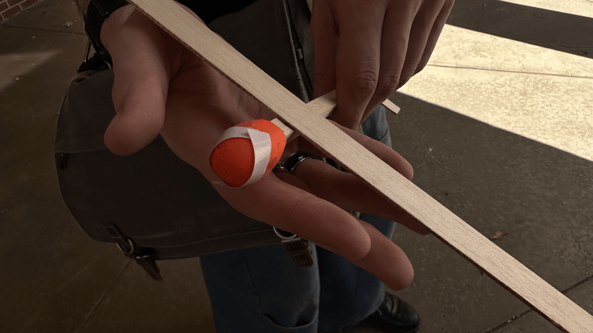
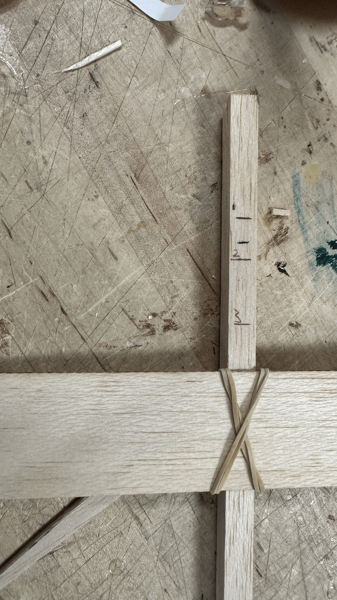
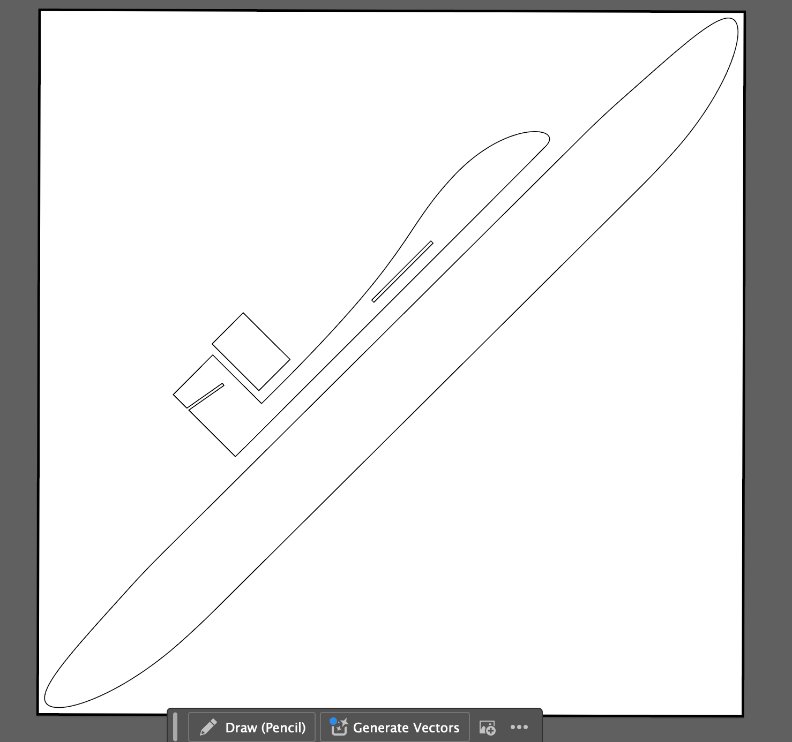
What?
- Designed, built, and flight-tested a hand-launched balsa glider to maximize flight distance under strict size, mass, and material constraints
- Iterative engineering: continuously refining design, trim, and structure based on test results
How?
- Selected AR ~12.5 wing to minimize induced drag; placed CG 0.25 in ahead of quarter-chord for longitudinal stability
- Iterated ballast placement for trim, reinforced joints during late-stage testing
- Manufactured with a laser cutter on balsa wood
Results?
- Test flights averaged 45–50 ft, exceeding the 20 ft minimum by over 2x
- All geometric, mass, and material constraints satisfied
- Co-authored a full technical design report
ResearchTheoretical Physics
Published Research: Visually Representing Black Holes
Theoretical Physics Researcher · KU Leuven University · 2023
What?
- Investigated which geometric spacetime diagram best balances physical accuracy and educational accessibility when teaching black hole physics
- First-authored a full manuscript comparing Penrose, Kruskal–Szekeres, and Eddington–Finkelstein diagrams; submitted and accepted for publication
How?
- Conducted a structured literature review across Special Relativity, General Relativity, and pedagogy research
- Analyzed each diagram's treatment of coordinate singularities, causal structure, and event horizons against accessibility for early learners
- Mentored by Dr. Marina David (Postdoctoral Researcher, KU Leuven)
Results?
- Published in The National High School Journal of Science (2024) with 4,500+ views
- Found Eddington–Finkelstein diagrams offer the strongest balance of physical fidelity and conceptual clarity for beginners
Read the paper ↗